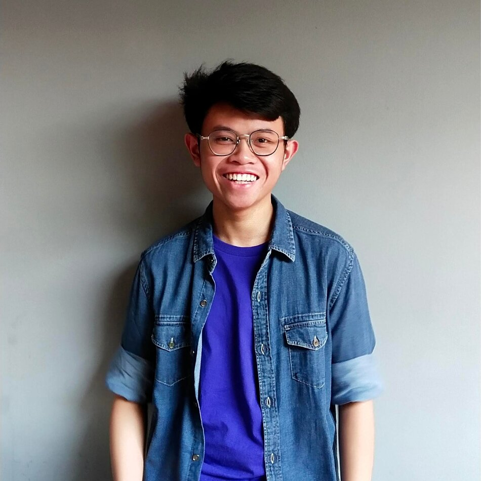

K-POP

IM NAYEON
Im Na-yeon (Hangul: 임나연; lahir 22 September 1995), lebih dikenal sebagai Nayeon, adalah seorang penyanyi asal Korea Selatan. Setelah ikut serta dalam acara realitas berjudul Sixteen pada tahun 2015, ia terpilih menjadi anggota grup vokal wanita asal Korea Selatan, Twice, yang dibentuk oleh JYP Entertainment.[3][4] Nayeon dideskripsikan sebagai salah satu vokalis dan penari utama Twice, dan sering kali mengisi posisi center selama melakukan tarian.[3][5] Nayeon adalah anggota Twice yang paling tua.[3][6] Selama dua tahun berturut-turut (2017 dan 2018), ia merupakan idola Korea terpopuler keenam dalam jajak pendapat musik tahunan Gallup Korea, dan naik ke posisi kelima pada tahun 2019. Kehidupan dan karier.
STRAY KIDZ
SKZ adalah grup vokal pria asal Korea Selatan yang dibentuk oleh JYP Entertainment melalui acara realitas berjudul Stray Kids pada tahun 2017. Grup ini terdiri dari 8 anggota, yaitu Bang Chan, Lee Know, Changbin, Hyunjin, Han, Felix, Seungmin, I.N merilis album mini pra-debut berjudul Mixtape pada Januari 2018 dan secara resmi debut pada 25 Maret 2018 dengan album mini bertajuk I Am Not. Dan Woojin mengundurkan diri dari grup pada Oktober 2019.
ONE IN MILLION
adalah sebuah grup idola wanita asal Korea Selatan yang dibentuk oleh JYP Entertainment. Grup ini terdiri dari sembilan anggota: Nayeon, Jeongyeon, Momo, Sana, Jihyo, Mina, Dahyun, Chaeyoung, dan Tzuyu. Twice dibentuk melalui sebuah program televisi berjudul Sixteen, dan melakukan debut mereka pada tanggal 20 Oktober 2015 dengan album mini bertajuk The Story Begins.
THE MOST BIGGEST AGENCY DI KOREA SELATAN
1. SM Entertainment
2.YG Entertainment
3. JYP Entertainment
4. HYBE
MAMA 2022
MAMA Platinum:
BTS
Yogibo Album of the Year:
BTS - ProoF
Yogibo Artist of the Year:
BTS
Yogibo Song of the Year:
IVE - LOVE DIVE
Yogibo Worldwide Icon of the Year:
BTS
Yogibo Chill Artist:
Stray Kidz
Best Female Artist:
Nayeon from TWICE
Best Male Artist:
Lim Youngwoong
Best Female Group:
BLACKPINK
KPOP
Arti K-Pop adalah Korean Pop atau musik populer yang berasal dari Korea Selatan. Genre dari musik yang dimaksud pun beragam, bisa dari hip-hop, jazz, rock, electronic dance, dan lain sebagainya. Biasanya musik ini dibawakan oleh sebuah grup yang terdiri dari 4 sampai 13 member,setiap group memiliki jumlah yang berbeda. Namun, jumlah tersebut bukan patokan. Pasalnya, ada grup K-Pop yang diisi hingga belasan hingga puluhan member. Hingga saat ini, K-Pop dan Kdrama menjadi dua hal tak terpisahkan dari Gelombang Korea (Korean Wave) di berbagai negara di seluruh dunia. basis penggemar yang besar untuk K-Pop membuatnya makin dikenal. Arti K-Pop di Indonesia pun kini bukan lagi hal asing.
Sejarahnya...
1. Changga Pada tahun 1885-an, muncul genre musik yang disebut changga di Korea Selatan. Musik ini terdiri dari alunan instrumental modern, seperti gitar, flute, drum, dan lain sebagainya. Lagu-lagunya berasal dari adaptasi musik pop barat. Selanjutnya, pada tahun 1910-1945 saat penjajahan Jepang atas Korea berlangsung, changga digunakan sebagai genre untuk mengekspresikan kesedihan dan harapan penduduk Korea. Namun, Jepang menyita musik-musik tersebut dan menerbitkan buku lirik sendiri. Ada changga yang populer dan dikenal hingga sekarang, judulnya "Huimangga" yang berarti harapan.
2. Pop Korea Awalnya, musik Pop Korea terdiri dari banyak genre, antara lain "oldies" yang terpengaruh dari musik barat populer tahun 60-an. Selanjutnya, ada musik rock dan trot yang juga cukup digemari.
3. Pop Modern Korea Pop modern Korea ditandai dengan debut penampilan grup Seo Taiji and Boys pada tahun 1992. Musik pop Korea lebih berwarna dengan dimasukkannya unsur rap, rock, techno Amerika. Hip hop dan dance mendominasi tren musik di tahun 90-an. Warna musik di era tersebut cukup menjadi pengaruh pada musik berkualitas yang dihasilkan saat ini.
4. K-Pop Masuk tahun 2000-an, pendatang baru berbakat telah disiapkan. Genre musik R&B dan hip hop dibawakan dengan apik oleh Rain, Super Junior, Big Bang dan lain sebagainya. Hingga kini, telah banyak bermunculan grup K-Pop yang kariernya gemilang baik di dalam hingga luar negeri.
|

|